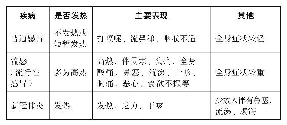

孕产妇是新冠肺炎的易感人群。
女性怀孕时，血聚胞宫养胎，自身容易气血失调，抗病能力下降，更容易感染疫病，而且病情发展往往较快，甚至母子皆危。中华中医药学会组织全国中医妇科专家编写了《妊娠期新型冠状病毒肺炎中医药治疗专家建议》，其中有几条重点内容我想给孕妇及备孕的朋友们具体讲一讲。
早孕期：NT筛查。
中孕期：胎儿系统超声与OGTT筛查。
36〜38周：进行一次胎儿超声检查。
36周+：每周胎心监护。
（高危孕妇或有其他妊娠并发症及合并症者，根据医生的建议进行产检。）
解析：
为了避免感染，有些项目可以不查，只查重要的，尽量减少去医院的次数。
补充建议：
哪些情况要及时去医院？
胎动异常、不规律宫缩、出血、流羊水或血压大于140/90mmHg。
如果出现发热、咳嗽怎么办？
国家卫健委发布的《疑似感染行动指南》说明，如果出现发热、咳嗽等症状，以下情况建议采取居家隔离的方式进行观察：
1.症状轻微，体温低于38 ℃，无明显气短、气促、胸闷、呼吸困难，呼吸、血压、心率等生命体征平稳。
2.无严重呼吸系统、心血管系统等基础疾病及严重肥胖者。

居家发热患者的医学管理建议：
1.饮食宜清淡，忌肥甘厚腻。
2.多饮温水，少饮冰凉饮料，保证脾胃功能正常。
3.避免盲目或不恰当使用抗菌药物。
4.必须严格正确佩戴口罩，与家人分餐，与家人保持距离1.5米以上。
5.怕冷明显者，可以选用解热散寒类的中成药。
6.怕冷、发热、肌肉酸痛、咳嗽者，可选用清热解毒、宣肺止咳类中成药。
7.乏力倦怠、恶心、食欲下降、腹泻者，可选用化湿解表类中成药。
8.发热伴有咽痛明显者，可选用清热解毒利咽功能类中成药。
9.发热伴有大便不畅者，可加用通腑泄热类制剂。
临床表现：妊娠期低热，鼻塞，咽稍痛或痒，或轻微干咳，轻微乏力。舌淡红，苔薄白微腻或微黄，脉浮。
推荐处方：葱豉汤合玉屏风散加味。
葱白（切段）6〜9克，淡豆豉10克，生黄芪9〜15克，白术9克，黄芩9克，防风9克，桑叶9克，苏叶6克，金银花6〜15克，牛蒡子9克，桔梗6〜9克。
加减：
咽痛明显者，去黄芪，加连翘9克。
舌苔厚腻者，加姜半夏6〜9克，陈皮6〜12克，茯苓6〜15克。
推荐中成药：① 乏力伴胃肠不适：藿香正气胶囊（丸、水、口服液）。
② 乏力伴发热：人参败毒胶囊、金花清感颗粒、金叶败毒颗粒合玉屏风颗粒。
解析：
我在《回家吃饭的智慧》一书里写过的“葱花豆豉汤”，就是葱豉汤的食疗版。孕妇平时感冒或流感也可以喝这道汤，安全平和。（详细做法见本书第132页）
临床表现：妊娠期恶寒发热或无热，干咳，咽干，倦怠乏力，胸闷，脘痞，或呕恶，便溏。舌质淡或淡红，苔白腻，脉濡滑。
推荐处方：藿香正气散加减。
藿香10克，苍术9〜15克，陈皮10克，白芷6〜10 克，草果6克，生麻黄6克，羌活10克，生姜6〜10克，苏叶10克，桑白皮10克，桔梗10克，炒白术10克，砂仁3〜6克（后下）。
推荐中成药：藿香正气胶囊（丸、水、口服液）、九味羌活颗粒、连花清瘟胶囊（颗粒）；口苦、苔黄者，推荐清开灵口服液（颗粒、胶囊、片）。
解析：
藿香正气和九味羌活，这两种中成药都是传统的经典方，安全可靠，见效还特别快，孕妇、儿童、老弱人群都可以用。
临床表现：妊娠期气短，倦怠乏力，纳差，呕恶，痞满，大便无力，便溏不爽。舌淡胖，苔白腻，脉缓滑无力。
推荐处方：人参白术散加减。
党参15克，茯苓15克，白术10克，炙黄芪15克，藿香10克，炒苍术10克，陈皮10克，砂仁6克（后下），炒扁豆10〜15克。
推荐中成药：参苓白术散（丸）、生脉饮。
解析：
对于恢复期的孕妇，用的中药全部是药食同源的，补气健脾，化痰祛湿，可以安心服用。黄芪、党参、茯苓、白术、陈皮、扁豆……这些补益的食材，平时吃也是很好的。
在国家卫生健康委办公厅、国家中医药管理局办公室国中医药办医政函〔2020〕22号《关于推荐在中西医结合救治新型冠状病毒感染的肺炎中使用“清肺排毒汤”的通知》中，推荐的清肺排毒汤亦适用于轻型、普通型、重型新冠肺炎孕妇。注意：妊娠慎用药（麻黄、桂枝、枳实）的剂量，中病即止。
解析：
在2月17日，国务院联防联控机制召开的新闻发布会上介绍，通过对山西、河北、黑龙江和陕西四省使用清肺排毒汤治疗新冠肺炎的临床疗效进行临床观察和数据分析来看，总体有效率达90%以上，甚至重症也适用。它来自张仲景的4个经方，而且这4个经方都有现成的中成药，详情可以参阅前文“大疫出大医”（本书第39页）中的内容。
“中病即止”，这个原则其实大家平时自己在家吃药也要谨记。普通感冒、流感，吃一两次药，好转了就可以停，不要过度服药。
如病情需要，按照“有故无殒，亦无殒也”的原则，在患者知情同意后方可应用，但应严格掌握用药剂量及时间，“衰其大半而止”，以免伤胎、动胎。
解析：
“有故无殒，亦无殒也”这句话出自《黄帝内经》——
黄帝问曰：“妇人重身，毒之何如？”岐伯曰：“有故无殒，亦无殒也。”帝曰：“愿闻其故何谓也？”岐伯曰：“大积大聚，其可犯也，衰其大半而止。有故无殒，亦无殒。”
意思是孕妇患有危重大病时，可以适当使用峻下、滑利、 破血、耗气等孕妇禁用药，此时疾病会承担药物的药性和毒性，不会使胎儿滑落。
“衰其大半而止”——治大病用重药，治到六七分就可以停，不要追求“斩尽杀绝”，以免损伤身体。剩下的几分，用平和药善后、用饮食调养就可以了。
陈老师在《顺时生活：2020健康日历》书中提示过，今年要预防传染病和流感。2020年1月23日，我的家乡武汉向全世界展现出了最大的社会责任感——封城！而在这天我们家也迎来了一个新的小生命（外孙出生）。新年那天医生让我们出院，回家后每隔3小时，便用稀释的酵素水喷洒家里，消毒。我们用干鱼腥草、陈皮、牛蒡、罗汉果、加强版梅子汤、葛根粉等交替搭配着喝。在家里，按照陈老师讲的，用家里的香料做香包，平日喝消炎茶，多喝温开水，没事儿就用经络梳。我孩子坐月子时喝荠菜水，吃鱼腥草炖鸡、墨鱼粥、小米粥、醪糟鸡、当归煮鸡蛋等。跟着陈老师养生十几年，好多食物的用法吃法已经深深刻在脑海里。感恩陈老师介绍的安全放心又药食同源的好食材，让我们家小孩顺利地度过了月子期。愿疫情早日结束，病毒快点离去！！！
——42群小越（湖北）